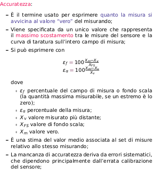

Un sensore è definito come un dispositivo che riceve in input uno stimolo e fornisce in output un segnale elettrico.Un sensore è quindi un trasduttore di variabili non elettriche in variabili elettriche.Un trasduttore è infatti una generalizzazione: traduce un tipo di energia in un altro tipo di energia. I sensori sono parte dei dispositivi di misura, formati da un trasduttore, un sensore e un amplificatore che fornisce un segnale d’uscita con le proprietà volute.
Caratteristiche statiche di un sensore
Misura:- pari a y = u ± ε, con y uscita del sensore, u misurando e ε incertezza; spesso u è sconosciuto e non conoscibile (si usa un riferimento)
Taratura :- metodo per limitare l’incertezza intrinseca di un sensore (l’accuratezza) a partire da un campione di riferimento; caaratteristiche metrologice del sensore quando esce dalla fabbrica
Calibrazione:- è l’aggiustamento, da ripetere periodicamente, di parametri del sensore per far corrispondere l’uscita a valori rilevati accuratamente con un altro strumento.
Accuratezza, Precisione e Rangeability:



Caratteristiche Dinamiche
La risposta di un sensore a variazioni del segnale fornito non è generalmente istantanea e passa per un certo transitorio primadi tornare a regime;
Il comportamento dinamico del sensore, almeno per piccole variazioni attorno a un punto di lavoro ȳ, può essere descritto dalla caratteristica dinamica, cioè dalla funzione di trasferimento F(s)= deltaY/deltau
in condizioni statiche (i.e. stimolo lentamente variabile nel tempo) un sensore è completamente descritto dalla sua caratteristica statica, fondo scala etc.;
Quando lo stimolo varia con una certa velocità, l’uscita del sensore si adegua allo stimolo ma non istantaneamente: lacaratteristica statica del sensore diventa variabile e si parla di funzione di trasferimento;
Le funzioni di trasferimento vengono descritte come equazioni differenziali ordinarie a coefficienti costanti del primo o secondo ordine.
caratteristiche dinamiche del 1° ordine

Caratteristiche dinamiche del 2° ordine
Una FdT del secondo ordine descrive un sensore che incorpora al suo interno due componenti di immagazzinamento d’energia (e.g. accelerometro con sistema massa-molla):

Isteresi:-un errore che “sdoppia” la curva di risposta all’ingresso, che se varia in una direzione si percorre in una direzione, se varia nell’altra la si percorre nell’altra;
Saturazione:- è il livello di stimolo d’ingresso oltre al quale l’uscita non varia più;
dead band:- s’intende la non sensibilità del sensore in un range specifico di valori dello stimolo; l’uscita rimane confinata a un valore (tipicamente zero) all’interno di tutta la zona morta.